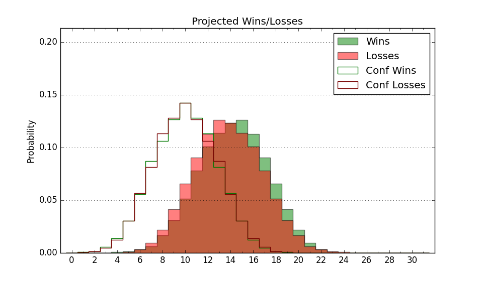

| Home | Game Probabilities | Conferences | Preseason Predictions | Odds Charts | NCAA Tournament |
| City: | Niagara University, New York | |
| Conference: | Metro Atlantic (5th)
| |
| Record: | 0-1 (Conf) 2-4 (Overall) | |
| Ratings: | Comp.: -4.2 (217th) Net: -2.3 (204th) Off: 95.1 (272nd) Def: 97.4 (123rd) SoR: 0.7 (206th) |
| Remaining | ||||||
|---|---|---|---|---|---|---|
| Date | Opponent | Win Prob | Pred. | |||
| 12/4 | @ Quinnipiac (156) | 25.1% | L 60-68 | |||
| 12/11 | Eastern Michigan (306) | 80.2% | W 71-62 | |||
| 12/18 | @ NJIT (329) | 62.3% | W 62-59 | |||
| 12/21 | Binghamton (332) | 85.2% | W 70-59 | |||
| 12/30 | Mount St. Mary's (177) | 57.6% | W 63-61 | |||
| 1/1 | Rider (248) | 71.0% | W 67-61 | |||
| 1/6 | @ Fairfield (264) | 43.9% | L 59-61 | |||
| 1/8 | @ Manhattan (300) | 51.5% | W 63-62 | |||
| 1/13 | Siena (186) | 59.6% | W 64-61 | |||
| 1/15 | Marist (291) | 76.9% | W 62-54 | |||
| 1/20 | @ Rider (248) | 41.8% | L 63-65 | |||
| 1/22 | @ Saint Peter's (259) | 43.6% | L 60-61 | |||
| 1/27 | Manhattan (300) | 78.4% | W 67-59 | |||
| 2/3 | Canisius (239) | 69.9% | W 68-62 | |||
| 2/5 | @ Siena (186) | 30.2% | L 60-65 | |||
| 2/10 | Quinnipiac (156) | 53.3% | W 65-64 | |||
| 2/12 | Iona (91) | 35.3% | L 63-67 | |||
| 2/17 | @ Mount St. Mary's (177) | 28.5% | L 59-65 | |||
| 2/19 | @ Marist (291) | 49.4% | L 58-59 | |||
| 2/24 | Fairfield (264) | 72.7% | W 63-57 | |||
| 2/26 | Saint Peter's (259) | 72.4% | W 64-57 | |||
| 3/4 | @ Canisius (239) | 40.5% | L 63-66 | |||
| Previous | Game Score | |||||
| Date | Opponent | Win Prob | Result | Off | Def | Net |
| 11/7 | @Maryland (21) | 3.8% | L 49-71 | 2.0 | -10.7 | -8.6 |
| 11/12 | @Bucknell (261) | 43.6% | L 50-68 | -17.2 | -5.2 | -22.4 |
| 11/18 | (N) Central Arkansas (316) | 70.5% | W 73-64 | 10.0 | 7.3 | 17.2 |
| 11/19 | (N) Stetson (225) | 52.0% | W 66-62 | 7.6 | -0.0 | 7.5 |
| 11/26 | @St. John's (87) | 13.3% | L 70-78 | 1.3 | 6.8 | 8.2 |
| 12/2 | @Iona (91) | 13.8% | L 56-78 | -5.8 | -5.2 | -11.0 |
| Stats & Trends | |||||
|---|---|---|---|---|---|
| Current | Day | Week | Month | Season | |
| Composite | -4.2 | -0.5 | -0.3 | +1.8 | +1.8 |
| Comp Rank | 217 | -6 | -6 | +19 | +19 |
| Net Efficiency | -2.3 | -2.1 | -3.2 | -- | -- |
| Net Rank | 204 | -22 | -39 | -- | -- |
| Off Efficiency | 95.1 | -0.9 | -2.7 | -- | -- |
| Off Rank | 272 | -18 | -50 | -- | -- |
| Def Efficiency | 97.4 | -1.2 | -0.5 | -- | -- |
| Def Rank | 123 | -24 | +3 | -- | -- |
| SoS Rank | 59 | +31 | +123 | -- | -- |
| Exp. Wins | 14.2 | -0.5 | -0.4 | +0.9 | +0.9 |
| Exp. Conf Wins | 10.0 | -0.5 | -0.3 | +0.6 | +0.6 |
| Conf Champ Prob | 4.1 | -3.9 | -3.3 | -2.1 | -2.1 |

| Advanced Stats | ||
|---|---|---|
| Stat | Value | Rank |
| Off Eff FG % | 0.474 | 258 |
| Off Ast Ratio | 0.144 | 160 |
| Off ORB% | 0.242 | 246 |
| Off TO Rate | 0.174 | 239 |
| Off FT Ratio | 0.285 | 239 |
| Def Eff FG % | 0.463 | 80 |
| Def Ast Ratio | 0.117 | 51 |
| Def ORB% | 0.271 | 191 |
| Def TO Rate | 0.140 | 284 |
| Def FT Ratio | 0.383 | 290 |